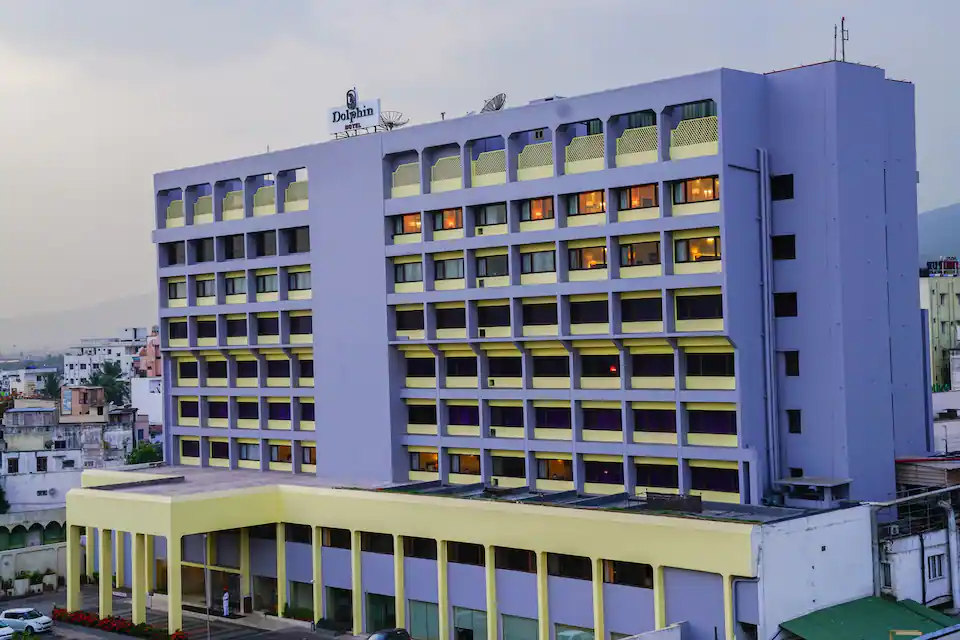

A significant turning point in the history of our magnificent beachfront hotel is being marked by the celebration of 13 years of opulent memories. I am filled with immense gratitude and pride at this very moment. Celebrating the milestone only makes me more confident in what we do, and we are going to continue ensuring impeccable service for all our guests in the future as well. I would like to take this opportunity to thank all our employees for their immense hard work, dedication and commitment for delivering top-notch services and our stakeholders for providing us immense support and guidance. Hope that the hotel continues to set new benchmarks in the hospitality sector in the years to come,” said Gorav Arora, General Manager, Novotel Mumbai Juhu Beach.

few senior staff members fondly recall how Ramoji Rao used to crisscross the city on his Lambretta scooterLambretta scooter to promote and distribute the newspaper. He had launched Eenadu with a print order of about 4,000 copies and sell about 3,000 of them. But his experience in the advertising industry had enabled him to keep the newspapermafloat, recollects a senior executive from the advertising industry.
Done well, a family break in one of the most family-friendly hotels in London can be just that—a break. But check into a hotel that hasn’t fine-tuned its facilities or food for children and a long-awaitedescape can quickly spin into an expensive nightmare. Every parent knows that there’s nothing worse than treading on eggshells aroundother guests, so how do top-drawer London hotels factor in little ones without ruining things for everyone else? With tons of first-hand experience, bags of creativity, and an awareness that social taboos around children in luxury hotels are confined to history.

Nestled on the serene Willingdon Island, overlooking Kochi’s picturesque harbour, Taj Malabar Resort& Spa’s refreshed interiors honour the city’s local heritage. The meticulously designed 93 rooms and suites offer a perfect blend of contemporary design and timeless elegance. Guests can indulge in an array of culinary experiences, including the all-day diner, Pepper, which presents a variety of global and regionalcuisine, and Rice Boat, the seafood specialty restaurant offering a unique dining experience on a traditional Kerala boat. Mattancherry Bar provides the perfect setting to unwind with a signature cocktail amidst elegant surroundings. J Wellness Circle Spa is a sanctuary blending established Ayurvedic therapies with modern comforts and a yoga centre. The infinity pool overlooking the backwaters is the perfect spot to simply lounge. Additionally, the resort offers venues for social gatherings and meetings.